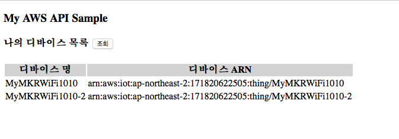

나의 디바이스 목록 조회
list_devices.html 시작 html 페이지
<!DOCTYPE html> <html lang="en"> <head> <meta charset="UTF-8"> <title>AWS Open API Sample</title> <!-- JQuery 라이브러리 설정 --> <script src="https://code.jquery.com/jquery-3.4.1.min.js" integrity="sha256-CSXorXvZcTkaix6Yvo6HppcZGetbYMGWSFlBw8HfCJo=" crossorigin="anonymous"></script> <!-- 디바이스 조회 자바스크립트 로딩--> <script src="list_devices.js"></script> </head> <body> <h3>My AWS API Sample</h3> <h4> 나의 디바이스 목록 <input type="button" value="조회" onclick="Start();" /> </h4> <table id="mytable"> <thead style="background-color:lightgrey"> <th>디바이스 명</th> <th>디바이스 ARN</th> </thead> <tbody> </tbody> </table> <div id="result">No Data</div> </body> </html>list_devices.js: JQuery 기반 Javascript 코드
// API 시작 function Start() { invokeAPI(); emptyTable(); } var invokeAPI = function() { // 디바이스 조회 URI // prod 스테이지 편집기의 맨 위에 있는 "호출 URL/devices"로 대체해야 함 var API_URI = 'https://XXXXXXXXXX.execute-api.ap-northeast-2.amazonaws.com/prod/devices'; $.ajax(API_URI, { method: 'GET', contentType: "application/json", success: function (data, status, xhr) { var result = JSON.parse(data); setDataList(result.things); // 성공시, 데이터 출력을 위한 함수 호출 console.log(data); }, error: function(xhr,status,e){ // document.getElementById("result").innerHTML="Error"; alert("error"); } }); }; // 테이블 데이터 삭제 var emptyTable = function() { $( '#mytable > tbody').empty(); document.getElementById("result").innerHTML="조회 중입니다."; } // 데이터 출력을 위한 함수 var setDataList = function(data){ $( '#mytable > tbody').empty(); data.forEach(function(v){ var tr1 = document.createElement("tr"); var td1 = document.createElement("td"); var td2 = document.createElement("td"); td1.innerText = v.thingName; td2.innerText = v.thingArn; tr1.appendChild(td1); tr1.appendChild(td2); $("table").append(tr1); }) if(data.length>0){ // 디바이스 목록 조회결과가 있는 경우 데이터가 없습니다 메시지 삭제 document.getElementById("result").innerHTML=""; } else if (data.length ==0) { document.getElementById("result").innerHTML="No Data"; } }
실행 화면
초기화면

조회 버튼을 클릭한 후
